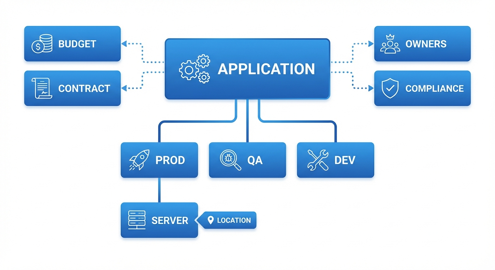

IT Ops Fast Track: From Application to Server¶
This guide walks you through documenting an application and its supporting infrastructure -- from creating the app entry to linking it to the server that hosts it. It's designed to get you productive fast, covering the essential steps without drowning you in options.
Prefer a one-page summary?
All the key steps on a single A4 page -- print it, pin it, share it with your team.
For full details, see the Applications and Assets reference docs.
The Big Picture¶

Everything in KANAP's IT Landscape module connects to paint a complete picture of your landscape:
| Object | What it represents |
|---|---|
| Application | A business app or IT service you need to document |
| Environment | Where it runs -- Prod, QA, Dev, etc. (called "Instances" in KANAP) |
| Server (Asset) | The infrastructure that hosts it -- VMs, physical servers, containers |
The chain is simple: Application → Environment → Server. By the end of this guide, you'll have this chain fully documented.

Why this matters
When someone asks "where does this app run?", "who owns it?", or "is it compliant?" -- you'll have the answer in seconds instead of digging through spreadsheets.
Step 1: Create Your Application¶
Go to IT Landscape → Applications and click New App / Service.
Fill in the essentials:
| Field | What to enter | Example |
|---|---|---|
| Name | A clear, recognizable name | Salesforce CRM |
| Category | The primary purpose | Line-of-business |
| Vendor | The supplier (from your master data) | Salesforce Inc |
| Criticality | Business importance | Business critical |
| Lifecycle | Current status | Active |
Click Save. Your application is now in the registry, and the full workspace opens with nine tabs for detailed documentation.
Start with what you know
Description, publisher, version, licensing -- all useful, but optional at this stage. You can enrich later. The goal is to get the app into the system.
Step 2: Add an Environment (Instance)¶
Every application runs somewhere. The Instances tab documents your environments.
Open your application and go to the Instances tab. Click Add and select the environment type (Prod, Pre-prod, QA, Test, Dev, or Sandbox).
For each instance, you can capture:
| Field | What it does | Example |
|---|---|---|
| Environment | The environment type | Prod |
| Base URL | The access URL | https://mycompany.salesforce.com |
| Lifecycle | Instance-specific status | Active |
| SSO Enabled | Is Single Sign-On active? | Yes |
| MFA Supported | Is Multi-Factor Authentication supported? | Yes |
| Notes | Any additional context | Primary EU instance |
Copy from Prod
Once your Production instance is set up, use the Copy from Prod button to quickly scaffold QA, Dev, and other environments with similar settings.
Instance changes save immediately -- no need to hit the main Save button.
Step 3: Assign Owners¶
Go to the Ownership & Audience tab. This is where you document who's responsible.
Business Owners¶
The business stakeholders accountable for the application. Add one or more people -- their job title will appear automatically.
IT Owners¶
The IT team members responsible for technical operations and support. Same mechanism -- add the people, roles appear.
Audience (Optional)¶
Select which Companies and Departments use this application. KANAP automatically calculates the number of users based on your master data.
Why owners matter
Ownership makes it easy to reach the right people when it matters -- planned maintenance, service disruptions, upgrade decisions, license renewals. It also drives the My Apps and My Team's Apps scope filters on the main list. Without owners, the app is only visible in the "All Apps" view -- which means nobody feels responsible for it, and nobody gets notified.
Step 4: Set Access Methods¶
Go to the Technical & Support tab. Under Access Methods, select how users reach this application:
- Web -- browser-based access
- Locally installed application -- desktop client
- Mobile application -- phone/tablet app
- VDI / Remote Desktop -- virtual desktop
- Terminal / CLI -- command-line interface
- Proprietary HMI -- industrial interface
- Kiosk -- dedicated terminal
Access methods are configurable in IT Landscape Settings, so your list may include additional options.
Also set:
| Field | What it means |
|---|---|
| External Facing | Is this app accessible from the internet? |
| Data Integration / ETL | Does this app participate in data pipelines? |
Step 5: Link to Other Objects (Relations)¶
Go to the Relations tab to connect your application to the rest of your IT management data.
| Link type | What you're connecting | Why |
|---|---|---|
| OPEX Items | Recurring costs (licenses, SaaS fees) | See the full cost picture |
| CAPEX Items | Capital expenditure projects | Track investment |
| Contracts | Vendor agreements | Know when renewals are due |
| Projects | Portfolio projects | Connect to your project portfolio |
| Relevant websites | Documentation, wikis, runbooks | Quick access to external resources |
| Attachments | Files (drag-and-drop or file picker) | Keep specs and docs alongside the app |
You can do this later
Relations are powerful but not blocking. Create them when you have the data -- the app is fully functional without them.
Step 6: Add Compliance Information¶
Go to the Compliance tab. This is increasingly important for audits and regulatory requirements.
| Field | What to enter | Example |
|---|---|---|
| Data Class | Sensitivity level | Confidential |
| Contains PII | Stores personal data? | Yes |
| Data Residency | Countries where data is stored | France, Germany |
| Last DR Test | Last disaster recovery test date | 2025-11-15 |
Data Classes are configurable
The default classes (Public, Internal, Confidential, Restricted) can be customized in IT Landscape → Settings to match your organization's data classification policy.
Step 7: Create Your Server (Asset)¶
Go to IT Landscape → Assets and click Add asset.
Overview tab¶
Fill in the core fields:
| Field | What to enter | Example |
|---|---|---|
| Name | Hostname or identifier | PROD-WEB-01 |
| Asset Type | The server type (dropdown) | Virtual Machine |
| Is Cluster | Toggle if this is a cluster | No |
| Location | Where it's hosted (required) | Paris Datacenter |
| Lifecycle | Current status | Active |
| Go-live date | When it entered service | 2025-01-15 |
| End-of-life date | Planned decommission | -- |
| Notes | Any additional context | -- |
Once a Location is selected, several read-only fields are automatically derived:
- Hosting type (on-premises, cloud, colocation, etc.)
- Cloud provider / Operating company (e.g., AWS, Azure, or the company running the facility)
- Country
- City
Location is the key
The Location drives many attributes of your asset automatically. Locations are managed in IT Landscape → Locations -- set them up once and every asset assigned to them inherits hosting type, provider, country, and city. You don't need to fill these in manually.
Click Save to unlock the full workspace. For physical asset types, additional Hardware and Support tabs become available to track serial numbers, manufacturer details, and vendor support contracts.
Technical tab¶
Go to the Technical tab to add:
| Section | Fields | Details |
|---|---|---|
| Environment | Environment dropdown | Production, QA, Dev, etc. |
| Identity | Hostname, Domain, FQDN, Aliases, OS | FQDN is auto-computed from Hostname + Domain |
| IP Addresses | Type, IP, Subnet | Network Zone and VLAN are derived from Subnet |
Multiple IP addresses
A server can have several IP addresses -- add as many as needed (e.g., management interface, production VLAN, backup network). Each entry can have its own type and subnet, and the Network Zone and VLAN are derived automatically.
Step 8: Link the Server to Your Application¶
This is the final connection -- tying your server to the application environment it supports.
There are two ways to create this assignment:
From the Application side¶
- Open your application
- Go to the Servers tab
- Select the Production environment
- Click Add assignment
- Select your asset (
PROD-WEB-01) - Set the Role (Web, Database, Application, etc.)
From the Asset side¶
- Open your asset
- Go to the Assignments tab
- Click Add assignment
- Fill in the assignment fields:
| Field | What to enter | Example |
|---|---|---|
| Application | The application to link | Salesforce CRM |
| Environment / Instance | Which instance | Production |
| Role | Server role for this app | Web |
| Since date | When the assignment started | 2025-01-15 |
| Notes | Any context | -- |
The chain is complete
You now have the full path documented:
Salesforce CRM → Production instance → PROD-WEB-01
Anyone can trace from "what app?" to "what server?" to "where is it?" in seconds.
How It All Connects¶
Every piece of data you enter feeds into something bigger:
Application Landscape View¶
Your Applications list becomes a live registry showing every application with its environments, criticality, hosting type, and ownership -- filterable by any attribute.
Infrastructure Mapping¶
Assets linked to application instances let you answer questions like:
- "Which servers support this business-critical app?"
- "What applications will be affected if this server goes down?"
- "How many apps are hosted in this datacenter?"
Compliance Reporting¶
Data classification, PII flags, and data residency flow into compliance views. When the auditor asks "where is customer data stored?", you have a documented, traceable answer.
Knowledge¶
Both Applications and Assets have a Knowledge tab where you can link runbooks, architecture decisions, operational procedures, and internal documentation. Having these references attached to the right records means your team can find what they need during incidents without hunting through wikis.
Connection Map¶
Once assets are documented, you can create Connections (Server to Server or Multi-server) between them to visualize network flows and dependencies. The Connection Map renders these as an interactive graph with role-based vertical tiers for an architecture-style view.
Interfaces & Interface Map¶
Take it one step further: document Interfaces between applications to capture data flows, integration points, and business context. Each interface has six tabs for thorough documentation -- Overview, Ownership & Criticality, Functional Definition, Technical Definition, Bindings & Connections, and Data & Compliance.
Then use the Interface Map to visualize the full application flow. In the default Business view, you see clean source-to-target relationships. Switch to the Technical view to reveal middleware platforms as diamond-shaped nodes, showing the actual data path. Depth filtering counts only primary application nodes -- middleware is transparent, so selecting an app with depth 2 shows you two real hops regardless of how many middleware platforms sit in between.
Quick Reference¶
| I want to... | Go to... |
|---|---|
| Create an application | IT Landscape → Applications → New App / Service |
| Add environments | Open app → Instances tab |
| Assign owners | Open app → Ownership & Audience tab |
| Set access methods | Open app → Technical & Support tab |
| Link budgets/contracts | Open app → Relations tab |
| Attach knowledge docs | Open app → Knowledge tab |
| Add compliance info | Open app → Compliance tab |
| Create a server | IT Landscape → Assets → Add asset |
| Link server to app (from app) | Open app → Servers tab → Add assignment |
| Link server to app (from asset) | Open asset → Assignments tab → Add assignment |
| View server connections | Open asset → Connections tab |
| View connection map | IT Landscape → Connection Map |
| View interface map | IT Landscape → Interface Map |
| Configure dropdowns | IT Landscape → Settings |
You're ready
You now know how to document the full chain from application to server. Start with your most critical apps, add their production environments, link the servers -- and you'll have a living, queryable IT landscape in no time. For detailed documentation on every feature, explore the Applications and Assets reference sections.